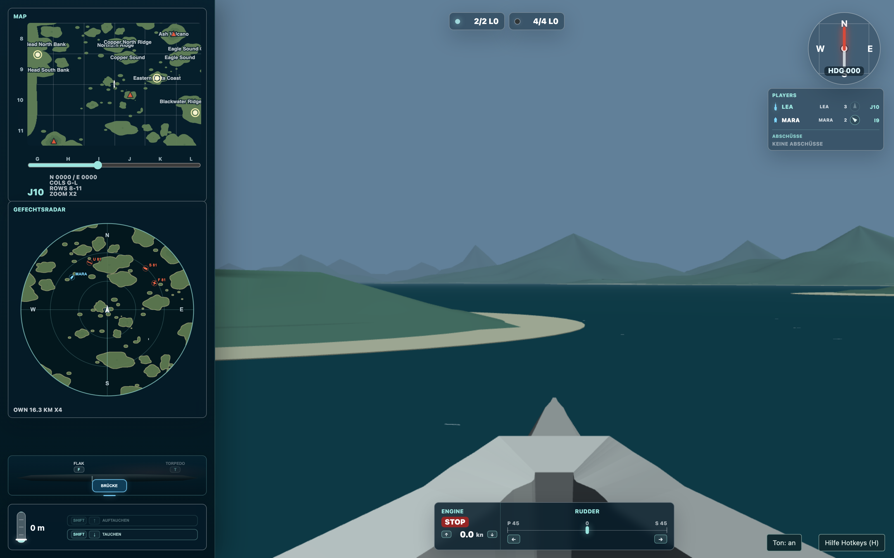

Anmelden. Auslaufen. Erst einmal umsehen.
- Wähle beim Einstieg deinen Namen beziehungsweise deine Kennung, eine Flotte und U-Boot. Starte anschließend das Spiel.
- Schau zuerst auf Karte und Radar: Wo liegt freies Wasser, wo sind Freunde, wo nähert sich ein Gegner?
- Öffne mit H die Tastenhilfe. Sie zeigt die Möglichkeiten deiner aktuellen Position. Noch einmal H oder Esc schließt sie.
- Gib auf der Brücke mit ↑ Fahrt. Mit ↓ schaltest du die Fahrstufen zurück – über Stop bis zur Rückwärtsfahrt. Mit ← und → legst du Ruder.


- 1Landkarte: eigener Standort und Sektoren.
- 2Radar: Kontakte und laufende Torpedos.
- 3Positionen: hier wechselst du deinen Platz.
- 4Fahrt und Ruder: das Boot braucht Zeit zum Reagieren.
- 5Players: Kennung, Wertung und Peilung.
- 6Tauchtiefe: aufgetaucht, Sehrohr oder tief.
Deine erste Tauchfahrt
- Fahre zunächst in freies Wasser. Prüfe Karte und Radar, bevor du dich mit den Sehrohren beschäftigst.
- Mit Umschalt + ↓ gehst du auf Sehrohrtiefe. Warte, bis das Boot wirklich dort angekommen ist.
- Wähle 2 für das 360°-Sehrohr. Schaue mit den Pfeiltasten ringsum und probiere Z für die Vergrößerung.
- Mit 1 kehrst du zur Sicht nach vorn zurück. Mit Umschalt + ↑ tauchst du wieder auf.
Mitspielen und wieder einsteigen
Die See ist auch ohne volle menschliche Besetzung belebt: Freie Fahrzeuge werden von Bots geführt. Nach einer Versenkung kehrst du an einer freien Position zurück. Orientiere dich dann neu, statt denselben Gegner an derselben Stelle zu erwarten.
Du möchtest lieber Teil einer Mannschaft sein? Anheuern gibt es nur auf Torpedobooten. Dort teilen sich mehrere Menschen ein Schiff und besetzen unterschiedliche Positionen. Ein U-Boot steuerst du selbst; eine gemeinsame U-Boot-Besatzung ist nicht vorgesehen.